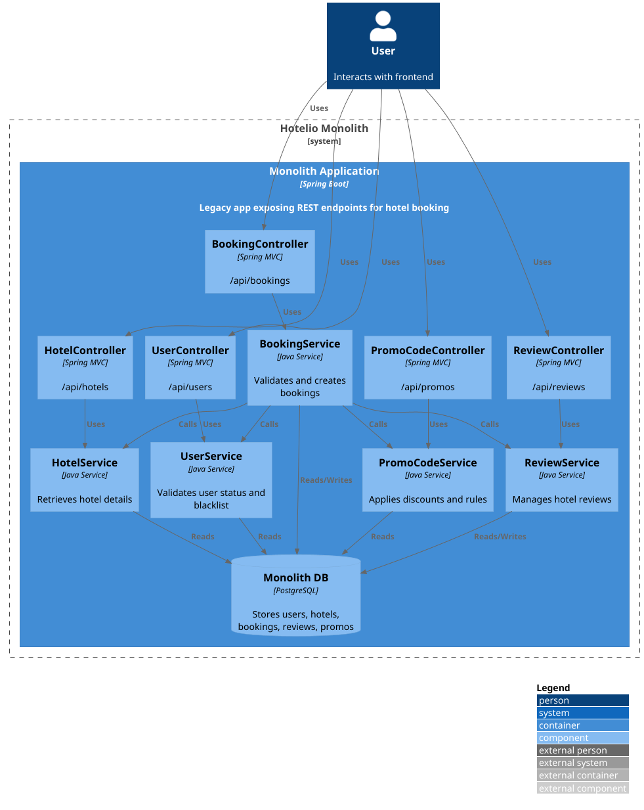

Для работы будет использован кейс компании Hotelio.
Hotelio — онлайн-платформа для бронирования отелей и апартаментов. У неё около 1 млн зарегистрированных пользователей и основной трафик приходится на поиск и бронирование жилья. Система построена на Java-монолите, который обеспечивает API для клиентов и партнёрских каналов.
Сервис Hotelio реализован как единое приложение, в котором все бизнес-функции собраны в одном коде, разворачиваются как единый сервис и используют одну базу данных.
С ростом бизнеса возникли серьёзные архитектурные и операционные проблемы. Команда приняла решение о переходе на микросервисную архитектуру с постепенным выносом сервисов.
Вам как раз предстоит более детально проанализировать архитектуру системы и выделить наиболее критичные проблемы.
Структура IT-отдела:
Текущая инфраструктура:

Назначение модулей:
BookingService — обрабатывает создание бронирований. Выполняет все проверки: пользователя,
отеля, промокода, отзывов. Вычисляет финальную цену, скидку и сохраняет результат.
UserService — проверяет статус пользователя: активен ли он, не находится ли в чёрном списке. И
возвращает его статус.
HotelService — предоставляет информацию об отелях. Используется для валидации бронирования и
отображения информации в интерфейсе.
PromoCodeService — проверяет промокоды: действительность, применимость к конкретному
пользователю.
ReviewService — отвечает за отзывы и рейтинг отеля. Влияет на возможность бронирования, если у
отеля плохая репутация.
Начать поэтапный переход к микросервисной архитектуре, применяя паттерн Strangler Fig, — выносить по одному компоненту, оставляя остальной функционал в монолите. Это позволит упростить масштабирование, снизить время выхода фич, повысить отказоустойчивость и упростить независимую разработку разных команд.
Финальное целевое состояние через год:
В рамках проектной работы нужно спроектировать изменения в ближайшей перспективе. А именно промежуточное состояние через пару месяцев:
Для работы над заданиями вам понадобятся:
Приложение написано на Java. Мы понимаем, что не все имеют опыт работы с Java, и поэтому сделали приложение простым и интуитивно понятным. В целом важно понимать, что специалисты, занимающиеся проработкой архитектуры системы, часто осваивают новые для себя технологии. Работа над этим проектом поможет вам легче адаптироваться к будущим задачам с неизвестным стеком.
Задание 1. Проработка миграции от монолита к микросервисам
Цель задания: подготовить архитектурный анализ и план начала миграции на микросервисы.
Впереди масштабная трансформация — разделение монолитного Java-приложения на независимые сервисы.
Изучите текущий код монолита. В директории architecture в readme.md вы найдёте описание модулей системы, структуру проекта и список API-эндпоинтов и их поведение.
Составьте ADR. Оно будет описывать целевое состояние системы. Выберите уровень детализации и количество диаграмм и ADR. Подсветите ключевые проблемы — существующие и найденные вами. Предложите опции решений и их дизайн — как решить текущие проблемы. Прописать план миграции — как перейти к целевому состоянию.
Поскольку ресурсы ограничены, начать миграцию нужно с одного модуля. Определите, какой модуль это будет, и обоснуйте, почему именно он. Сформулируйте план на основе Strangler Fig.
Перед переходом к заданию запустите приложение и базу данных, выполните тесты (см. tests/readme). Это поможет лучше понять архитектуру системы.
Чтобы сдать решение в формате ADR, используйте шаблон из директории readme.
В README.md лежит дополнительная информация о работе системы и советы по работе над заданиями. Обратите на них внимание.
Структура и содержание репозитория, в котором нужно сдать решение:
├── ADR/diagram
└── test-log.txt — выгрузка логов или скриншот проверки API и кодовой базыЗагрузите результат в директорию task1/results/ вашего репозитория.
Задание 2. Реализация новых сервисов
Цель задания: начать миграцию сервисов — реализовать сервис бронирования с использованием Kafka.
В этом задании вы будете реализовывать один из сервисов системы. Предлагаем сделать это на примере
сервиса бронирований BookingService. Вы можете сделать это на любом языке, который вам
ближе. Общение между сервисом и остальной системой было решено реализовать через gRPC.
Для включения прокси в монолите нужно передать в environment контейнера следующие значения:
BOOKING_SERVICE_EXTERNAL_HOST: booking-service
BOOKING_SERVICE_EXTERNAL_PORT: 9090Вам предстоит реализовать сервис booking-statistics с помощью Kafka. Отдел аналитики
передал, что ему нужны данные по бронированиям — по пользователям, по отелям, по дням и так далее.
DevOps-инженер не даёт доступ к боевой базе. Статистику нужно посчитать в новом сервисе.
Решение — не добавлять дополнительную логику в только что выделенный сервис. Вместо этого — создать
отдельный микросервис booking-history-service.
Для реализации этого нужно пока добавить Kafka в контейнер монолита: общая сеть ещё не готова.
Пример готовой конфигурации есть в workspace для task2.
kafka:
image: confluentinc/cp-kafka:7.2.1
ports:
- "9092:9092"
environment:
KAFKA_BROKER_ID: 1
KAFKA_ZOOKEEPER_CONNECT: zookeeper:2181
KAFKA_ADVERTISED_LISTENERS: PLAINTEXT://kafka:9092
KAFKA_OFFSETS_TOPIC_REPLICATION_FACTOR: 1
networks:
- hotelio-net
zookeeper:
image: confluentinc/cp-zookeeper:7.2.1
ports:
- "2181:2181"
environment:
ZOOKEEPER_CLIENT_PORT: 2181
ZOOKEEPER_TICK_TIME: 2000
networks:
- hotelio-netbooking-service.
networks:
hotelio-net:
external: trueВ docker-compose файле измените host/port на host/port вашего сервиса (дефолт localhost:9090).
Измените тесты для booking сервиса так, чтобы они соответствовали вашей текущей
реализации. Тесты расположены в папке test в корне проекта.
booking-history-service, читающие из Kafka. Kafka уже
создаётся в рамках docker-compose.
booking-service, чтобы он писал события в Kafka.booking-service реализована вся необходимая логика.booking-service отправляет событие в Kafka (BookingCreated).booking-history-service слушает события и формирует статистику асинхронно, без
нагрузки на боевую БД.
Структура и содержание репозитория, в котором нужно сдать решение
task2/results/
├── Лог/скриншот `docker ps`
├── Доработанный regress.sh (мб. init-fixtures)
├── test-log.txt (проведение тестовых запросов)
├── select * from bookings из новой системы и старой в текстовом виде после выполнения тестов
├── README.md с объяснением стратегии миграции данных при запуске нового сервиса и стратегии To Be
└── листинг бронирований, вызванный через REST из монолита и GRPC из микросервиса
└── select * из таблицы с историческими данными о бронированияхЗагрузите результат в директорию task2/results/ вашего репозитория.
Задание 3. Личный кабинет
Цель задания: GraphQL Federation:
После первых шагов по выделению модуля бронирования в отдельный gRPC-сервис, команда Hotelio столкнулась с новой задачей: реализовать личный кабинет, обеспечив удобный и быстрый доступ к информации из нескольких доменов сразу — бронирования и отели. Этот модуль важен для расширения бизнеса.
Текущие REST-интерфейсы монолита и один gRPC не позволяют гибко агрегировать данные между сервисами без множества последовательных вызовов. Особенно это ощущается при разработке фронтенда.
После некоторых решений вы понимаете, что BFF в данном случае просто необходим. Решить такую задачу удобно и гибко лишь на API Gateway будет тяжело.
Команда приняла решение перейти к GraphQL-шлюзу, используя Apollo Federation, где каждый домен будет представлен в виде субграф, объединённый в общий суперграф.
Предполагается, что в дальнейшем появится полноценный API Gateway, — так что можно сразу думать про разграничение доступа к информации. Например, пользователь не должен увидеть чужие бронирования.
Ваша задача — завершить реализацию федеративного GraphQL API с тремя модулями:
booking-subgraph:
hotel-subgraph:
apollo-gateway:
Структура проекта:
task3/
├── booking-subgraph/
│ ├── index.js // TODO: заменить заглушки на вызовы
│ └── ...
├── hotel-subgraph/
│ ├── index.js // TODO: заменить заглушки на вызовы
│ └── ...
├── apollo-gateway/
│ ├── index.js // Gateway-конфигурация
│ └── ...
├── docker-compose.yml // Запускает все 3 модуля
└── README.mdЧто можно использовать вместо внешнего вызова
Если у вас нет готового API — вставьте заглушку вида:
return [
{
id: 'b1',
userId,
hotelId: 'h1',
discountPercent: 20,
promoCode: 'SUMMER',
},
];Но лучше попробовать подставить REST/gRPC-вызов из прошлого задания.
Подсказки:
Структура и содержание репозитория, в котором нужно сдать решение:
task3/results/
├── Report с описанием внесённых изменений
├── Результат docker ps
├── Скриншот успешного вызова
├── Скриншот Deny по ACL
└── Логи booking-subgraph после двух запросов (или всех контейнеров через docker-compose up --build)Загрузите результат в директорию task3/results/ вашего репозитория.
Задание 4. Автоматизация развёртывания и тестирования
Цель задания: ускорить доставку фич, уменьшить количество ошибок при выкладке и упростить масштабирование в Kubernetes.
После успешного запуска первых двух микросервисов — booking и
booking-statistics — и их интеграции в GraphQL-суперграф, компания Hotelio поняла, что
ручное развёртывание и тестирование больше не выдерживает темпа изменений. Руководство дало зелёный свет
на автоматизацию.
Дополнительно о реализации сервиса:
Обязательно сделайте два варианта values.yaml: для staging и prod.
Стадии:
Если есть unit-тесты, нужно добавить отдельный шаг для их запуска.
Используйте gitlab-ci-local: gitlab-ci-local build test deploy tag.
💡 В локальной разработке быстрее тестировать helm/gitlab-ci локально, без деплоя в реальное боевое окружение. Но тестирование полного флоу локально обычно затрудняется отсутствием Docker Registry.
Конфигурация для эмуляции (через Docker Container Registry или Minikube Registry) будет отличаться в зависимости от используемого окружения — Linux, Mac OS или Windows gitbash/wsl2/wsl — из-за разницы в виртуализации и сложности с конфигурацией. Поэтому универсального решения для такого нет.
В этом проекте не используется Docker Registry: для работы был выбран более простой способ — прямая
загрузка образа в Minikube через load. В боевой конфигурации helm install просто будет
выполняться не локально, а на хосте — потому для изменения работы достаточно будет просто удалить
строку с minikube load. Так реализуется лёгкое переключение с тестового режима на
боевой.
Структура проекта:
task4/
├── booking-service/ # REST-сервис (Go/Java/etc)
├── helm/
│ └── booking-service/ # Helm-чарт сервиса (требуется доработка)
├── .gitlab-ci.yml # CI/CD-пайплайн (требуется доработка)
├── check-dns.sh # Проверка DNS внутри кластера
├── check-status # Статус деплоя и curl локально
├── README.mdDockerfile для каждого микросервиса
Структура и содержание репозитория, в котором нужно сдать решение:
task4/results/
├── report.md # Описание изменений и решений
├── values-staging.yaml
├── values-prod.yaml
├── .gitlab-ci.yml
├── Скриншот успешного curl на /ping
├── Скриншот ./check-dns.sh
├── Скриншот ./check-status
├── kubectl get pods + get services
├── Лог успешной сборки
└── docker image ls + minikube image listЗагрузите результат в директорию task4/results/ вашего репозитория.
Задание 5. Настройка управления трафиком с Istio
Цель задания: настроить маршрутизацию трафика с Istio.
После настройки CI/CD и развёртывания микросервисов в Kubernetes, команда Hotelio столкнулась с новой задачей: управление трафиком на продакшне.
Компания хочет тестировать фичи без риска, быстрее находить проблемные сервисы и управлять отказами без изменений в бизнес-коде.
Было решено установить Istio как Service Mesh и начать использовать трафик-менеджмент: канареечный Release, Circuit Breaker и другие механики. И начать, конечно же, с уже перенесённого в Kubernetes сервиса бронирования.
booking-service, только теперь добавьте для него Istio Service Mesh.
istioctl install --set profile=demo.
X-Feature-Enabled:
true в заголовке запроса.
Скрипты можно модифицировать.
Структура и содержание репозитория, в котором нужно сдать решение:
task5/results/
├── report.md # Описание изменений и решений
├── values-v1.yaml и values-v2.yaml с разными конфигурациями сервиса
├── virtual-service.yaml (canary + fallback + feature flag)
├── destination-rule.yaml (Retry + CircuitBreaking)
├── envoy-filter.yaml (Feature flag через EnvoyFilter)
└── Логи запуска проверочных скриптов (или Скриншоты)Загрузите результат в директорию task5/results/ вашего репозитория.